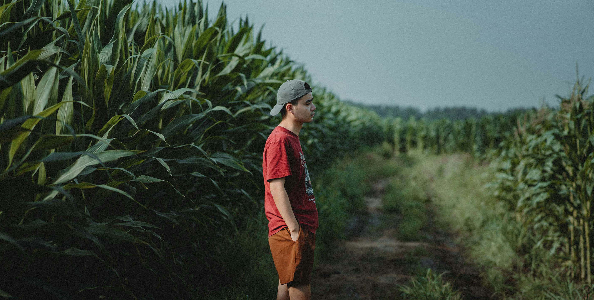
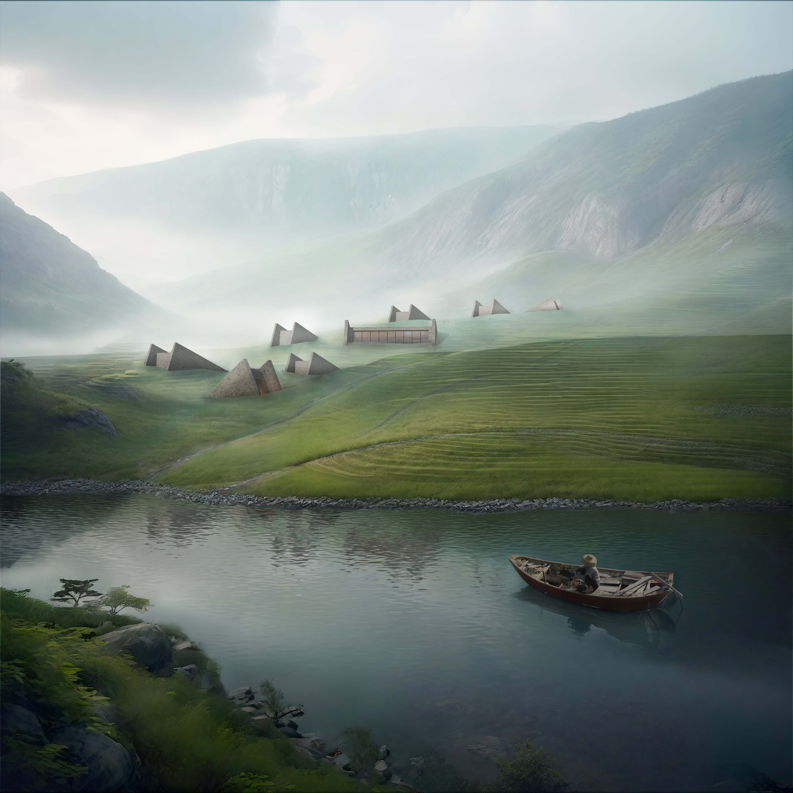
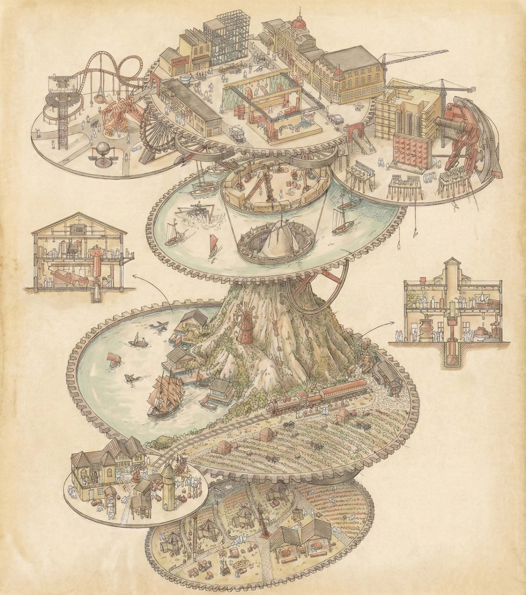
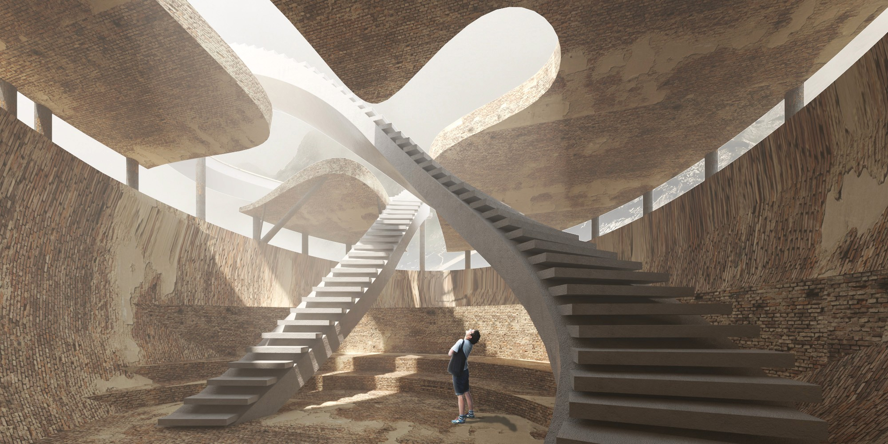
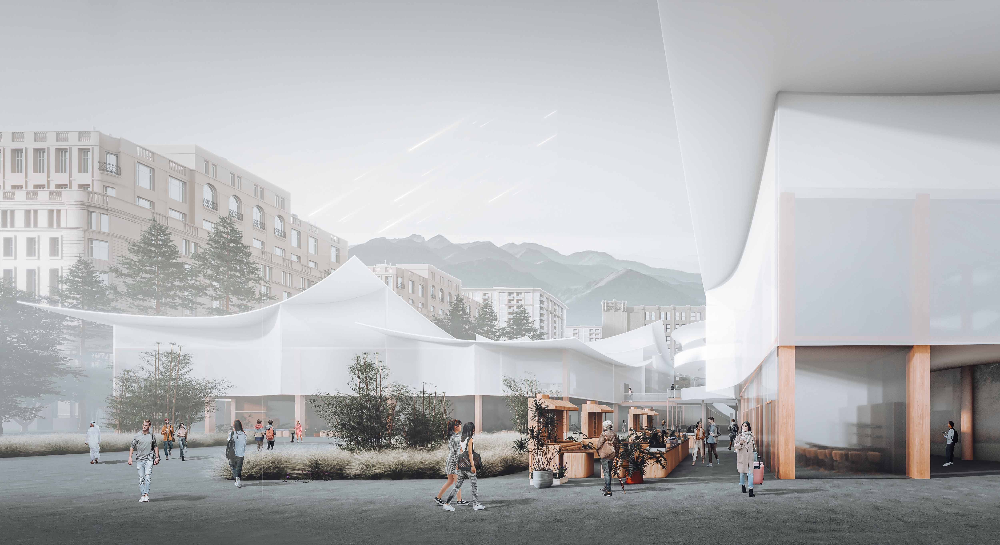
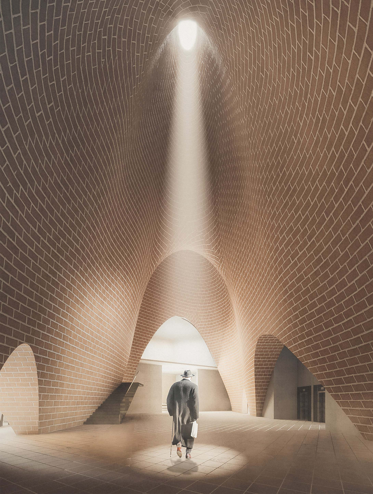
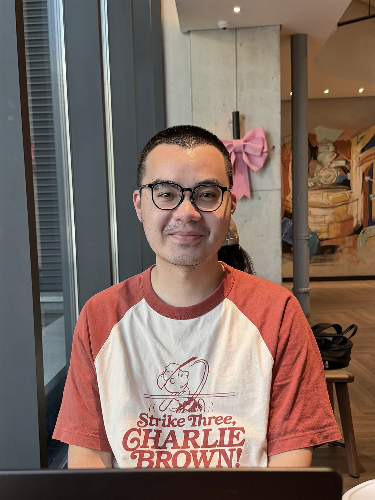

— a catalogue of research, buildings & photographs; reading the city through 2.78 million lines of text.
Geospatial analysis · scaling laws · spatial heterogeneity
Public sentiment measurement · depression perception
Machine learning · deep learning · LLM deployment
Environmental psychology · architectural design
My current study offers the first large-scale, fine-grained quantification of the link between depressive states and perceived urban places in China.

Where it began — my undergraduate design work, and the competition entry that quietly turned me from a designer into a researcher.





The darkroom — cinematic tones, natural light, and the interaction between people and place.
